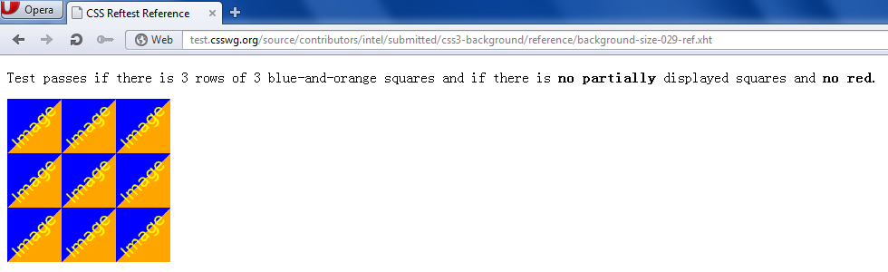
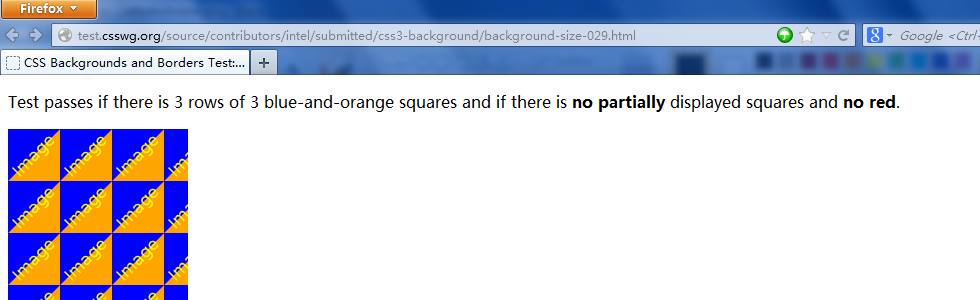
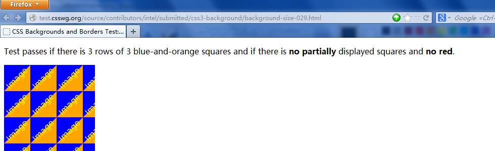

W3C Test Case and Bug Report
Zhiqiang Zhang (zqzhang), Intel China
Agenda
- How to write a spec-based test case?
- Reftest test case
- Script test case
- How to file a good bug report?
Reftest Test Case Sample
Reftest Test Case Sample - Fail
 

Reftest Test Case Sample - Test Source
<!DOCTYPE html>
<html>
<head>
<title>CSS Backgrounds and Borders Test: background-size '52px auto' with background-repeat 'round repeat'</title>
<link rel="author" title="Intel" href="http://www.intel.com">
<link rel="reviewer" title="G¨¦rard Talbot" href="http://www.gtalbot.org/BrowserBugsSection/css21testsuite/"> <!-- 2012-11-15 -->
<link rel="help" href="http://www.w3.org/TR/css3-background/#the-background-size" title="3.9. Sizing Images: the 'background-size' property">
<link rel="help" href="http://www.w3.org/TR/css3-background/#the-background-repeat" title="3.4. Tiling Images: the 'background-repeat' property">
<link rel="match" href="reference/background-size-029-ref.xht">
<meta name="flags" content="image">
<meta name="assert" content="Check if 'background-size' is '52px auto' and 'background-repeat' is 'round repeat', then the width is first rescaled to from 100px to 52px and then rescaled to 60px due to 'round' and the height of the corresponding background image is rescaled from 100px to 60px (to keep the original image aspect ratio) and then repeated vertically.">
<style>
div {
background-color: red;
background-image: url(support/100x100-blue-and-orange.png);
background-repeat: round repeat;
background-size: 52px auto;
height: 180px;
width: 180px;
/*
Background positioning area is 180px wide by 180px tall.
The width of the background image is 52px.
But, because background-repeat is set to round repeat, the
width is rescaled as following:
Newest width = 180px / (round [180px / 52px]);
Newest width = 180px / (round [3.46]);
Newest width = 180px / (3);
Newest width = 60px;
Then the height is rescaled to from 100px to 60px to keep
the original aspect ratio.
*/
}
</style>
</head>
<body>
<p>Test passes if there is 3 rows of 3 blue-and-orange squares and if there is <strong>no partially</strong> displayed squares and <strong>no red</strong>.</p>
<div></div>
</body>
</html>
Reftest Test Case Sample - Reference Source
<!DOCTYPE html PUBLIC "-//W3C//DTD XHTML 1.0 Strict//EN" "http://www.w3.org/TR/xhtml1/DTD/xhtml1-strict.dtd">
<html xmlns="http://www.w3.org/1999/xhtml">
<head>
<title>CSS Reftest Reference</title>
<link rel="author" title="G¨¦rard Talbot" href="http://www.gtalbot.org/BrowserBugsSection/css21testsuite/" />
<style type="text/css"><![CDATA[
img
{
height: 60px;
vertical-align: top;
width: 60px;
}
]]></style>
</head>
<body>
<p>Test passes if there is 3 rows of 3 blue-and-orange squares and if there is <strong>no partially</strong> displayed squares and <strong>no red</strong>.</p>
<div><img src="../support/100x100-blue-and-orange.png" alt="Image download support must be enabled" /><img src="../support/100x100-blue-and-orange.png" alt="Image download support must be enabled" /><img src="../support/100x100-blue-and-orange.png" alt="Image download support must be enabled" /><br /><img src="../support/100x100-blue-and-orange.png" alt="Image download support must be enabled" /><img src="../support/100x100-blue-and-orange.png" alt="Image download support must be enabled" /><img src="../support/100x100-blue-and-orange.png" alt="Image download support must be enabled" /><br /><img src="../support/100x100-blue-and-orange.png" alt="Image download support must be enabled" /><img src="../support/100x100-blue-and-orange.png" alt="Image download support must be enabled" /><img src="../support/100x100-blue-and-orange.png" alt="Image download support must be enabled" /></div>
</body>
</html>
Reftest Test Case Template
<!DOCTYPE html>
<title>[Test Area]: [Title/Scope of Test]</title>
<link rel="author" title="[Name of Author]" href=mailto:EMAIL OR
http://CONTACT_PAGE">
<link rel="help" href="http://www.w3.org/TR/[direct link to tested
section]">
<link rel="match" href="[path to reference file]">
<meta name="flags" content="[requirement flags]">
<meta name="assert" content="Test checks that [explanation of what
you're trying to test].">
<style>
[CSS for test]
</style>
<body>
<p> Test passes if [description of pass condition].</p>
[Content of test]
</body>
Reftest Reference Template
<!DOCTYPE html>
<title>[Test Area] Reference File</title>
<link rel="author" title="[Name of Author]" href=mailto:EMAIL OR
http://CONTACT_PAGE">
<style>
[CSS for test]
</style>
<body>
<p> Test passes if [description of pass condition].</p>
[Content of test]
</body>
Vendor Prefixes
- You may need to add a vendor prefix to the CSS property you're testing
- If the prefix is necessary, your test will appear to fail without it
- However, do not include vendor prefixes when pushing tests to the W3C
Script Test Case Sample

Script Test Case Sample - Test Source
<!DOCTYPE html>
<meta charset=utf-8>
<title>Blob constructor</title>
<link rel=help href="http://dev.w3.org/2006/webapi/FileAPI/#constructorBlob">
<link rel=help href="http://dev.w3.org/2006/webapi/WebIDL/#es-union">
<link rel=help href="http://dev.w3.org/2006/webapi/WebIDL/#es-dictionary">
<script src="/resources/testharness.js"></script>
<script src="/resources/testharnessreport.js"></script>
<script src="../support/Blob.js"></script>
<div id="log"></div>
<script>
test(function() {
assert_true("Blob" in window, "window should have a Blob property.");
assert_equals(Blob.length, 2, "Blob.length should be 2.");
assert_true(Blob instanceof Function, "Blob should be a function.");
}, "Blob interface object");
// Step 1.
test(function() {
var blob = new Blob();
assert_true(blob instanceof Blob);
assert_equals(blob.size, 0);
assert_equals(blob.type, "");
}, "no-argument Blob constructor");
test(function() {
var blob = Blob();
assert_true(blob instanceof Blob);
assert_equals(blob.size, 0);
assert_equals(blob.type, "");
}, "no-argument Blob constructor without 'new'");
...
</script>
Script Test Template: Shared Metadata
<!DOCTYPE html>
<title>[Test Area]: [Title/Scope of Test]</title>
<link rel="author" title="[Name of Author]" href=mailto:EMAIL OR
http://CONTACT_PAGE">
<link rel="help" href="http://www.w3.org/TR/[direct link to tested
section]">
<script src="/resources/testharness.js"></script>
<script src="/resources/testharnessreport.js"></script>
<link rel="stylesheet" href="/resources/testharness.css">
<div id="log"></div>
<script>
test(function() {
[body of test function - must include at least one assert*()
function]
}, [Test Name]);
/* Include as many test() functions as you need */
</script>
Script Test Template: Per-Test Metadata
<!DOCTYPE html>
<title>[Test Area]</title>
<script src="/resources/testharness.js"></script>
<script src="/resources/testharnessreport.js"></script>
<link rel="stylesheet" href="/resources/testharness.css">
<div id="log"></div>
<script>
test(function () {
[body of test function - must include at least one assert*()
function]
}
, [Test Name]
, {
help: [spec_link_1,
spec_link_2
]
, assert: [Test Assertion]
, author: [Author Name <author@email.com]"
}
);
/* Include as many test() functions as you need */
</script>
Bug Report Sample
Summary:
[CASCADE]author !important rules override user !important rules in user.css
Overview:
!important style rules in the author stylesheet override !important style
rules in the user stylesheet ([profile]/chrome/user.css); a direct
contradiction of the CSS spec (CSS2:6.4)
Steps to Reproduce:
1.) Copy 'Sample user.css' to the 'chrome' subdirectory in your profile
directory for Mozilla. Rename it to 'user.css'.
2.) View 'Testcase' in Mozilla.
* Both to be attached shortly
Tested with build id=2000061720 on Windows 2000
Why Report Bugs?
- To get the bugs fixed!
- Avoid duplicates: Search before you file!
- One bug per report.
- Always test the latest available build.
- State useful facts, not opinions or complaints.
- Flag security/privacy vulnerabilities as non-public.
- Follow your project bug reporting guidelines instead of these!
Bug Reporting General Guidelines:
How to Write a Good Bug Report
- Summary
- Description
- Steps to Reproduce
- Actual Results
- Expected Results
- Reduced Test Case
- Version, Platform and OS
- Crash data and/or Screenshot
Browser Issue Trackers
- Mozilla's bugzilla https://bugzilla.mozilla.org/
- WebKit bugshttps://bugs.webkit.org/
- Chrome bugs https://bugs.webkit.org/
- IE feedback http://connect.microsoft.com/IE
- Baidu http://pcbbs.baidu.com/forum.php?gid=1
- Tizen https://bugs.tizen.org/
- Other browsers - please check vendor's website for bug reporting information
Specification and Test Case Issue Trackers
- W3C's bugzilla https://www.w3.org/Bugs/Public/
- W3C mailing list http://lists.w3.org/
- web-platform-tests issues https://github.com/w3c/web-platform-tests/issues
- CSS Test Suite https://test.csswg.org/shepherd/
Reading Source Code!
Acknowledgements
- Rebecca Hauck & Jacob Goldstein, Learn how to create a W3C Ref and JS tests
- Elika J. Etemad, How to File a Good Bug Report
- reftests.md
- testharness-documentation.md
- bugreporting.md
- Gerard Talbot, background-size-[025-029]: available, improved replacements
- Hakim El Hattab, reveal.js